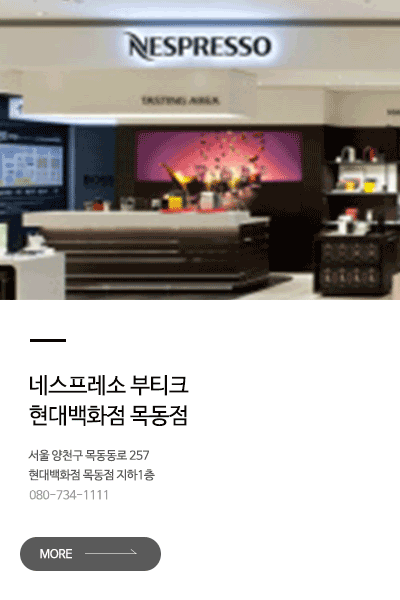

NEW VERTUO
회전 추출로 다른 차원의 커피가 탄생하다
NESSPRESSO VERTUO
회전 추출로 탄생한 풍성한 크레마와 깊은 바디감
네스프레소만의 혁신적인 회전 추출 센트리퓨전 (CENTRIFUSION™)
네스프레소가 최초로 선보이는 버츄오의 혁신적인 센트리퓨전 (Centrifusion™)
회전 추출로 탄생한 풍성한 크레마와 깊은 바디감의 커피를 경험해보세요.
최대 7,000RPM의 초고속 회전 추출로 지금까지 경험할 수 없었던 풍성한 크레마와 깊은 바디감을 완성합니다
more +당신의 취향에 맞춘 커피
당신의 취향에 맞춰 경험하는 최상의 커피
에스프레소(40ml)에서 더블 에스프레소(80ml), 그랑 룽고 (150ml), 머그(230ml),
알토(414ml)까지 당신의 취향에 맞춰 다양한 5가지 커피 스타일을 즐길 수 있습니다.
버츄오는 새로운 회전 추출로 풍부한 크레마와 깊은 바디감의 커피를 머그 이상의
큰 컵으로 즐길 수 있습니다. 5가지 커피 스타일과 28가지 종류의 커피로
당신의 취향에 맞춰 최상의 커피를 경험해보세요.
more +OUR STORY
네스프레소, HOW IT ALL STARTED
1984
네스프레소 이야기는 30 여년 전 간단한 아이디어로 시작되었습니다.
누구나 숙련 된 바리 스타처럼 완벽한 에스프레소 커피를 만들 수 있습니다. 1986 년에 시작된
Nespresso는 수백만 명의 사람들이 에스프레소 커피를 즐기는 방식을 재정의하고
혁신하여 글로벌 커피 문화를 형성했습니다.
The Nespresso story began more than 30 years ago with a
simple idea: enable anyone to create the perfect cup of
espresso coffee – just like a skilled barista.
From its beginning in 1986, Nespresso has redefined and
revolutionised the way millions of people enjoy their
espresso coffee and shaped the global coffee culture.
~1990
1900 년대 초 에스프레소 머신을 처음 발명 한 Luiggi Bezzera의
초기 작업을 기반으로, 누구나 완벽한 이탈리아 에스프레소를 만들고 즐길 수있는
새로운 시스템이 개발되었습니다. 세계 최초의 커피 시스템입니다.
그 뒤를 이어 급진적 인 실험과 많은 시행 착오로 가득 찬 우리 회사의 가장 중요한 해였습니다.
그러나 마침내 1986 년에 우리는 큰 돌파구를 가졌고 Nespresso가 첫 번째 커피 머신 (C-100)과
4 가지 시그니처 커피 블렌드 인Capriccio, Cosi, Bolero (현재 Volluto) 및 Decaffeinato와 함께
탄생했습니다.
Building on the earlier work of Luiggi Bezzera, who first
invented the espresso machine in the early 1900s, a new
system was developed that would allow anybody to craft,
and enjoy, a perfect Italian espresso: the world’s first
portioned coffee system.
What followed were our company’s most pivotal years, filled with radical experimentation and many trials and errors.
But finally, in 1986, we had our big breakthrough, and Nespresso was born – along with our first coffee machine (the C-100)
and four signature portioned coffee blends: Capriccio, Cosi, Bolero (now Volluto) and Decaffeinato.
2000
30 년 이상 동안 당사의 혁신은수백만 명의 사람들이 커피를 즐기는 방식을 재정의했으며,
스위스의 획기적인 아이디어에서 84 개국에 진출한 글로벌 브랜드로 성장했습니다.
버튼 하나만 누르면 가정, 사무실, 호텔, 레스토랑 및 카페의 고객이
고품질의 지속 가능하게 생산 된커피를 컵마다 즐길 수 있습니다.
우리는 지속적으로 성장하고 있으며 가치 사슬의 모든 단계에서
지속 가능한 품질을 제공하는 동시에 고객과의 직접적인
특권 관계를 유지하는 데 집중하고 있습니다.
For more than 30 years, our innovations have redefined the way millions
of people enjoy their coffee, growing from a ground-breaking idea in Switzerland to
a global brand with a presence in 84 countries.
At the touch of a button, customers in homes, offices, hotels,
restaurants and cafés can enjoy high-quality, sustainably produced coffee, cup after cup.
Yes, we continue to grow and are still relentless
in our focus on delivering sustainable quality at every stage of our value
chain while at the same time maintaining a direct privileged
relationship with our customers.
2010~
우리는 커피 소싱 및 사회 복지, 기후 변화, 알루미늄 소싱 및 재활용에 대한 야심 찬 목표와 함께
5 억 CHF의 투자로 지원되는 포지티브 컵 전략, 2020 년 지속 가능성 비전을 시작합니다.
최초의 Pure Origin Lungo 커피 인 Bukeela ka Ethiopia가 출시되어 영구 커피의 범위가 22 개로 늘어났습니다.
혁신적인 Vertuo 시스템이 북미 시장에서 출시되었습니다. Vertuo는 캡슐의 코드를 인식하고 물의 양, 추출 속도 및 온도를 조절하여
완벽한 커피 한 잔을 제공하는 혁신적인 Centrifusion ™ 기술을 사용하여 5 가지 다른 컵 크기로 갓 내린 커피를 만드는 다목적 시스템입니다.
We launch the Positive Cup strategy, our 2020 sustainability vision, with ambitious targets
for coffee sourcing and social welfare, climate change and aluminium sourcing and
recycling, and supported by a CHF 500 million investment.
Bukeela ka Ethiopia, the first Pure Origin Lungo coffee,
is introduced, bringing our range of permanent coffees to 22.
Bukeela ka Ethiopia, the first Pure Origin Lungo coffee,
is introduced, bringing our range of permanent coffees to 22.
The innovative Vertuo system is launched in the North American market.
Vertuo is a versatile system that makes freshly brewed coffee in 5 different cup sizes using
the innovative Centrifusion™ technology that recognizes the code on the capsule and adjusts the amount of
water, speed of extraction and temperature to deliver a perfect cup of coffee.
Our retail network exceeds 400 boutiques worldwide with openings in Bogotá,
Toulouse and Istanbul.
PRODUCT
네스프레소의 다양한 제품을 경험해보세요.
혁신적인 회전 추출로 탄생한 풍성한 크레마와 깊은 바디감
당신의 취향에 따라 즐기는 5가지 커피 스타일 - 에스프레소(40ml)에서
더블 에스프레소(80ml), 그랑 룽고(150ml), 머그(230ml), 알토(414ml)까지 당신의
취향에 맞춰 다양한 5가지 커피 스타일을 즐길 수 있습니다.
커피가 주는 즐거움은 우연히 완성되는 것이 아닙니다.
커피 체리가 한 잔의 커피로 완성되기까지의 전 과정을 원칙을 준수해
모든 커피를 세심하게 관리하고 노력을 한 결과입니다.
세계적인 바리스타들의 창의성과 전문성에서 영감을 받아 완성된 커피로
바리스타 크리에이션과 함께 라면 누구나 쉽게 커피 레시피를 집에서 즐길 수 있습니다.
more +
PLACE
네스프레소만의 부티크를 체험해보세요.
- 